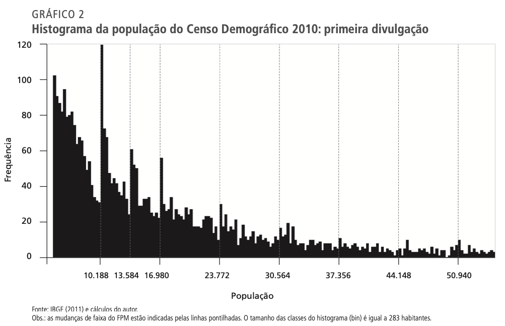
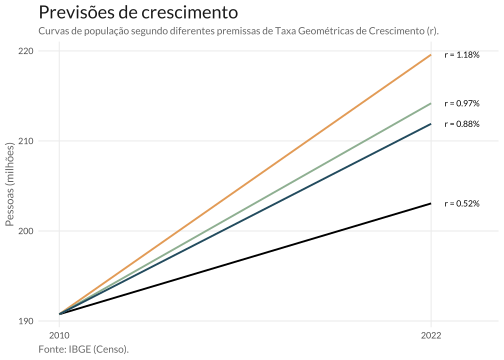
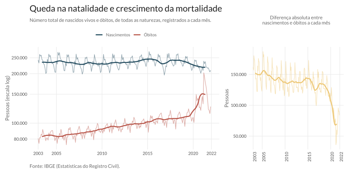
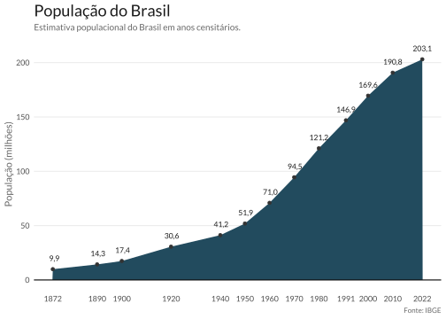

Censo 2022
Houve certo rebuliço nas redes sociais, quando do lançamento dos dados mais recentes do Censo Demográfico de 2022. O fato carregado na maior parte das manchetes do Brasil foi a queda no número projetado da população brasileira. Até 2021, projetava-se que a população brasileira estivesse em torno de 213 milhões de habitantes, segundo a pesquisa Estimativas da População do IBGE. O número que o Censo trouxe foi de 203 milhões, ou seja, houve uma queda de 10 milhões de habitantes em relação ao previsto. Ainda que pareça grande, o “erro de projeção” foi de menos de 5%. Contudo, é importante entender por que este número foi subestimado.
O contexto da pesquisa
Cortes de orçamento, pandemia e atrasos
Mesmo antes da divulgação dos primeiros dados de população, a mais recente edição do Censo enfrentou diversos problemas. A eclosão da Pandemia Covid-19, em 2020, forçou o adiamento da pesquisa para o ano seguinte; em 2021, contudo, o orçamento do Censo, originalmente de R$2 bilhão foi reduzido em mais de 90%, efetivamente impossibilitando a sua execução. Inicialmente, previa-se que haveria cerca de 200 mil recenseadores em operação: na prática, houve menos da metade, em torno de 91 mil; além disso, a redução do orçamento comprometeu o treinamento destes funcionários. A situação chegou a tal ponto que se decretou uma medida provisória permitindo a contratação de recenseadores sem processo seletivo algum.
O processo de coleta dos dados enfrentou diversos atrasos, sobretudo em função do número insuficiente de recenseadores em campo. A falta de verba também comprometeu o pagamento destes funcionários, que chegaram a organizar uma greve em setembro de 2022, em resposta às más condições de trabalho.
Não-respondentes
A fraca divulgação do Censo na imprensa, junto com a politização da pesquisa e a propagação de fake news, reduziu a adesão da população à pesquisa. A taxa geral de não-resposta foi de 4,23%, mas chegou a 8,11% no estado de São Paulo; em alguns municípios como Santana de Parnaíba, na Região Metropolitana de São Paulo, esta taxa chegou a 16,8%1. O problema foi particularmente severo nos domicílios de alta renda e condomínios fechados; também há evidência de que cidades, com maior proporção de votos para Bolsonaro no 2o turno , tiveram menor adesão ao Censo.
O Censo e o FPM
Por fim, como os dados de população de municípios têm um impacto direto sobre o repasse do Fundo de Participação de Municípios as prefeitura tem um incentivo perverso para distorcer os dados populacionais. De fato, o economista Leonardo Monastério verificou que isto já aconteceu em Censos anteriores e que o problema vem se agravando com o tempo. No histograma abaixo, retirado do trabalho original, vê-se que há quebras suspeitas nos valores da população que coincidem as faixas do FPM. Será interessante replicar o experimento para os dados atuais do Censo.

Balanço do Censo
O Censo enfrentou diversos problemas:
- Pandemia do Covid-19, cortes no orçamento e mudanças na presidência. Além de gerar atrasos na pesquisa, os cortes comprometeram a capacidade de contratação e treinamento de funcionários.
- Fraca divulgação da pesquisa e menor adesão da população. Autoridades importantes do governo, como o próprio presidente da república à época minaram a credibilidade do IBGE publicamente.
A ex-presidente do IBGE, Wasmália Bivar, avalia que o corte de orçamento comprometeu a pesquisa e que a subestimação da população era esperada. Já Roberto Olinto, também ex-presidente do instituto, pediu por uma auditoria do Censo, chegando a sugerir a possibilidade de ser necessário refazer a pesquisa. Apesar de todas as dificuldades, os representantes do IBGE defendem que o número divulgado é confiável e avaliam que o Censo foi um sucesso, quando se considera todos os desafios que foram enfrentados.
A matemática da população
Método das Componentes Demográficas
A fórmula da dinâmica populacional é bastante simples. A população num determinado ano é igual à população do ano anterior somada da variação populacional. Esta variação populacional é o (1) número total de nascimentos, (2) óbitos, (3) imigrantes e emigrantes.
Formalmente, seja a população no ano seguinte denotada por \(P_{t+1}\) e população no ano corrente, \(P_{t}\). A partir deste número, soma-se o total de nascimentos \(B_{t, t+1}\), subtrai-se o total de óbitos \(D_{t, t+1}\) e soma-se o fluxo líquido de migrantes \(NM_{t, t+1}\) . A equação abaixo resume estes fatos:
\[ P_{t+1} = P_{t} + B_{t,t+1} - D_{t,t+1} + NM_{t,t+1} \]
O IBGE tem boas maneiras de estimar estes números:
- O número de nascimentos, \(B_{t, t+1}\), é uma função da taxa de fertilidade e do número de mulheres em idade fértil;
- O número de óbitos, \(D_{t,t+1}\), similarmente, pode ser estimado a partir de tábuas atuariais de mortalidade, discriminadas por grupos de idade e sexo;
- Por fim, ainda que seja difícil quantificar o fluxo migratório, \(NM_{t,t+1}\), ele tem pouco impacto no número final, no caso do Brasil2.
A projeção da população, segundo a equação acima, é chamada de Método das Componentes Demográficas. Esta metodologia tem amplo respaldo teórico3 e é utilizada na pesquisa Projeções da População do IBGE. Na mais recente edição divulgada, de 2018, a projeção populacional do Brasil para 2022 é de 214,8 milhões de habitantes.
O Método das Componentes Demográficas também é utilizado pela Organização das Nações Unidas (ONU). Na edição de 2019 do World Population Prospects, projetava-se que a população do Brasil deveria chegar a 219 milhões de habitantes em 2025. Este número é muito próximo ao projetado pelo Projeções da População, citado acima. Segundo os dados do Censo, contudo, seria necessário um crescimento de 16 milhões de habitantes para alcançar este resultado.
Taxa Geométrica de Crescimento
Uma maneira ainda mais simples de modelar a dinâmica da população é via uma equação diferencial que expressa o crescimento exponencial da população. Na prática, populações frequentemente exibem comportamentos deste tipo, crescendo ou decaindo exponencialmente a uma taxa fixa. Esta taxa fixa \(r\) pode ser interpretada como a taxa geométrica de crescimento (TGC) da população.
\[ P_{t} = P_{0}\times(1 + r)^{t} \]
Supondo, que a TGC observada entre os censos de 2000 e 2010, de 1,18%, permancesse constante durante os próximos doze anos, a população em 2022 deveria ser de 220 milhões. Usando uma estimativa mais conservadora de 0,97% (TGC entre 2009 e 2010) a população seria de 214 milhões - valor muito próximo ao previsto pelo mais complexo Método de Componentes Demográficas acima. Por fim, utilizando a estimativa da TGC do IBGE em 2010, de 0,88%, a população brasileira deveria crescer para 212 milhões. A TGC verifica pelo Censo foi de 0,52%, que resulta na população de 203 milhões verificada.

A discrepância do Censo
Comparando os dados da Projeção da População, de 2018, e do Censo Demográfico de 2022 podemos mensurar a discrepância entre os valores projetados e os efetivamente verificados. De maneira geral, as projeções superestimaram o crescimento populacional em todas as Unidades Federativas com exceção de Mato Grosso e Santa Catarina. Em alguns casos, como no Amapá a diferença foi de quase 18%: projetou-se uma população de 886 mil, mas verificou apenas 811 mil. Em termos absolutos, a maior diferença aconteceu no estado de São Paulo, onde o Censo encontrou um valor 2,5 milhões inferior ao projetado.

As causas da divergência
Nos termos da equação populacional acima, a divergência do Censo deve ser explicada por:
- Superestimação do número de nascimentos. Isto pode ter ocorrido em função da queda de renda e aumento de desemprego causado pela recessão de 2015-174 e também pela Pandemia5. Também pode ser o caso de que a taxa de fecundidade do Brasil diminuiu mais rápido do que o esperado.
- Subestimação do número de óbitos. A Pandemia trouxe muito mais óbitos do que qualquer modelo demográfico razoável poderia prever.
- Subestimação do fluxo migratório para fora do país. Desde a crise econômica, aumentou o número de emigrantes no Brasil e taxa de brasileiros que não voltaram ao país também subiu.
No Brasil, os fluxos migratórios são pequenos, relativamente ao tamanho da população. Em 2021, por exemplo, o saldo líquido migratório brasileiro foi negativo em cerca de 300 mil pessoas6, equivalente a cerca de 0,1% da população. Assim, o número de nascimentos e óbitos deve explicar a maior parte da diferença entre o valor estimado pelo Censo e o valor projetado anteriormente.
Nascimentos e Óbitos
As séries de nascimentos e óbitos, do Registro Civil, apontam que houve uma queda na tendência de nascimentos durante a última década7. Olhando para a tendência da série, vê-se que a crise econômica de 2015-17 parece ter tido impacto negativo no número de nascidos vivos. Mesmo depois da recuperação da crise, a série segue numa tendência de queda, que se acentua a partir da Pandemia.
Já a série de óbitos segue uma tendência estável de crescimento desde 2003. Houve um ligeiro aumento dos óbitos em 2015, mas rapidamente viu-se um retorno da série à sua tendência de longo prazo. Por fim, é notável como a Pandemia teve um efeito severo sobre o número de óbitos no país.

Modelando o comportamento da série de óbitos, pode-se elaborar uma espécie de contrafactual: isto é, pode-se ter uma estimativa de como teria sido o número de óbitos caso na ausência da pandemia.
No gráfico abaixo, a curva amarela mostra os valores preditos da série junto com intervalo de confiança de 95%. O modelo é treinado com os dados de janeiro de 2003 a dezembro de 2019. Nota-se como os valores previstos divergem dos valores observados a partir de abril de 2020. Ao longo do período, o número acumulado de óbitos, acima do previsto pelo modelo, supera 600 mil.

Comparando as projeções de curto prazo do IBGE para nascimentos e óbitos, divulgadas em 2018, com os dados mais recentes do Registro Civil, divulgados em 2022, pode-se ver como o número de nascimentos foi superestimado e o número de óbitos, subestimado. Ainda assim, a divergência entre os números não é grande o suficiente para explicar a diferença de 10 milhões de habitantes verificada pelo Censo. Grosso modo, houve cerca de 400 mil mortes a mais do que o projetado e 800 mil nascimentos a menos.

Não há consenso ainda que explique a discrepância verificada entre as projeções do IBGE e o valor auferido no Censo. Certamente, a causa será um misto dos três motivos apresentados acima. Somente com o tempo será possível entender melhor o que houve com o Censo de 2022.
Footnotes
Recusas para entrevista não prejudicaram resultado final do Censo, diz IBGE (Folha SP)↩︎
De 2010 a 2020 houve um aumento de 24,4% no número de imigrantes no Brasil, resultando numa população de 1,3 milhão. Isto é equivalent a 0,6% da população total do Brasil. Apesar do Brasil ter hospedado imigrantes de diversos países ao longo do século XX, atualmente o país tem um fluxo migratório negativo (mais brasileiros saem do país do que estrangeiros entram) e uma população de imigrantes bastante reduzida.↩︎
Para uma referência simples veja Census dos EUA.)↩︎
Existe alguma evidência de que recessões econômicas diminuem as taxas de fecundidade, sobretudo em países em desenvolvimento. Veja, por exemplo, este artigo sobre a Colômbia e este sobre a Grécia.↩︎
De maneira geral, a Pandemia do Covid-19 teve um efeito negativo sobre as taxas de fecundidade e natalidade mundo afora. Em alguns países houve uma forte recuperação, mas em outros estas taxas seguem em níveis menores que os pré-pandêmicos. Link↩︎
Taxa de brasileiros que saem do país e não voltam é a maior em 11 anos (Valor)↩︎
A tendência das séries é estimada com uma média móvel centrada de 12 meses.↩︎